LPA
Section 1, the hardware highlights, is the 3D walkthrough above; the summary is the sheet at the top of this record.
Purpose
The LPA is a testing apparatus, not part of the bioreactor control loop. It exists to answer one biological question:
How does the wavelength and intensity of applied light affect protectant development in engineered B. subtilis WB800?
The strain carries a CcaS/CcaR light‑responsive expression system. Green light induces protectant production and red light halts it. To characterise that switch we need to expose cultures to defined wavelengths at defined intensities, repeatably, with nothing else varying. The LPA is the fixture that makes that possible.
The array is a 4 × 6 grid built around two wavelengths and three intensity levels. Each of the three tiers has a green channel and a red channel, and each channel is four internal‑resistance‑matched LEDs. One run therefore compares low, medium and high intensity at both wavelengths at the same time, under identical external conditions, which is the only way the comparison is fair.
Intensity is set by pulse‑width modulation from an Arduino through three MOSFETs, one per tier, and each tier is held constant for the whole of a test. The LPA applies a fixed dose and does not adjust output as it goes. It characterises, it does not control.
The LPA reached this form in three design‑build‑test‑learn cycles, and what each cycle found set the next one’s design ().
-
 Cycle 1
Dual‑wavelength array
AddedA green and a red LED per column, nothing calibrated
FoundLED output varies, and outside light gets in
Cycle 1
Dual‑wavelength array
AddedA green and a red LED per column, nothing calibrated
FoundLED output varies, and outside light gets in
-
 Cycle 2
Matched output, light shielding
Added40 LEDs measured, 24 matched in fours; cover from outside light
FoundMatching works, but the tiers must come from PWM
Cycle 2
Matched output, light shielding
Added40 LEDs measured, 24 matched in fours; cover from outside light
FoundMatching works, but the tiers must come from PWM
-
 Cycle 3
Enclosed, set in code
AddedHousing, intensity set in code, sliders, tube holder
FoundOn a shaker a post snapped, and the white holder leaked light
Cycle 3
Enclosed, set in code
AddedHousing, intensity set in code, sliders, tube holder
FoundOn a shaker a post snapped, and the white holder leaked light
-
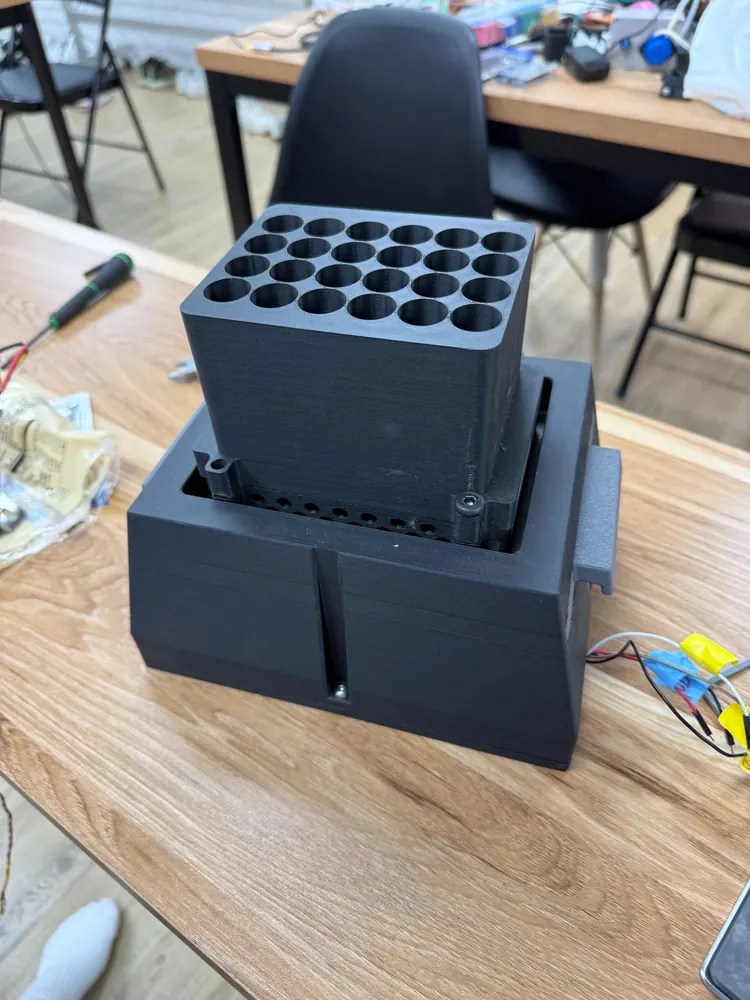
Final design Black holder, four screws ChangedTube holder in black, 4 wall loops; four screws, not two; solder joints reinforced
DBTL cycle 1 of 3
DBTL Cycle 1: Dual‑Wavelength Array
Does the idea work at all? A green and a red LED in every column, switched on and off, with nothing calibrated yet.
3.1 Design
The first build tests the simplest version of the idea: put a green and a red LED in each column, so we can switch between them quickly and exercise the on and off control of protectant production directly. Nothing is calibrated at this stage, because the question is whether the concept works at all before we spend effort making it precise.
Wire‑management prints were included from the start, since even at this size the harness gets unmanageable fast.
3.2 Build
3.4 Learn
The dual‑wavelength concept worked, but two things were not controlled, and both matter more than they first appear.
LED‑to‑LED output was not consistent
Internal‑resistance variance is a common problem in cheap single‑bulb LEDs. Nominally identical parts draw different currents and emit different intensities at the same drive level. As long as that is true, an intensity tier is not a real quantity, and the wavelength comparison is not fair either, since the green and red channels would be running at unknown relative brightness.
External light was not blocked
Ambient light adds an unknown amount of illumination to every tube, and it lands hardest on the low‑intensity condition, which is exactly where we need the cleanest separation.
Both have to be solved before intensity means anything, which is what cycle 2 is for.
DBTL cycle 2 of 3
DBTL Cycle 2: Matched Output and Light Shielding
Make intensity a real quantity: measure every LED, build columns of matched LEDs, and shield the array from outside light.
4.1 Design
Cycle 2 introduces the three‑intensity structure that defines the array, and the LED matching needed to make it real.
The approach is to measure the light output of every LED individually and use that to identify units with similar internal resistance. From the matched units we form three groups of four per wavelength, one group per intensity tier, arranged as columns.
Because the LEDs within a column are matched, the column can be recalibrated as a unit through straightforward mathematical adjustment, so that every column at a given tier matches every other. That is what turns low, medium and high from labels into reproducible quantities.
Coverage was added to block external light, so that the intensity a culture receives is the intensity we set.
4.2 Build
Every LED was driven at 5 V and measured individually on a lux meter using a printed sensor fixture, so each reading is taken at the same distance and orientation. Each LED carries a tag made of its row and its column, with rows A to D running downward and columns 1 to 5 running across, so any physical LED can be traced back to its own measurement. The array was then rewired with the matched units grouped into columns.


4.3 Test
All 20 green LEDs were read in kLux and all 20 red LEDs in lux, each at 5 V. The tables are laid out by the measurement tags of 4.2 (rows A to D, columns 1 to 5), not by the array's 4 × 6 grid. The shading marks which matched group each LED went into.
The 40 readings, LED by LED2 tables
| Row | 1 | 2 | 3 | 4 | 5 |
|---|---|---|---|---|---|
| A | 2.54 | 2.19 | 2.33 (low) | 2.40 (high) | 2.40 (high) |
| B | 2.37 (mid) | 2.11 | 2.34 (low) | 2.48 | 2.33 (low) |
| C | 2.01 | 2.37 (mid) | 2.38 (high) | 2.42 (high) | 2.36 (mid) |
| D | 2.33 (low) | 2.05 | 2.35 (mid) | 2.45 | 2.20 |
| Row | 1 | 2 | 3 | 4 | 5 |
|---|---|---|---|---|---|
| A | 431 (high) | 371 | 424 (high) | 393 (low) | 438 |
| B | 400 | 380 | 430 (high) | 397 (low) | 360 |
| C | 410 (mid) | 410 (mid) | 360 | 416 (mid) | 397 (low) |
| D | 411 (mid) | 390 (low) | 360 | 388 | 428 (high) |
Sorting those into groups of four by output gives the matched sets, one per tier and wavelength. After rewiring, the six channels read as follows, in kLux.
4.4 Learn
The variance is real and it is large. The green LEDs ran from 2.01 to 2.54 kLux, a spread of 26% across parts sold as identical. The red LEDs ran from 360 to 438 lux, a spread of 22%. Building intensity tiers out of unsorted LEDs would have meant every column sitting at an unknown brightness, so the matching step is not optional.
Sorting by measured output tightens each group considerably. The green low group holds 2.33 to 2.34 and the green mid group holds 2.35 to 2.37, which is well inside 1%. The red groups hold to about 2% each.
Two things did not come out clean, and both need addressing before this data supports an intensity claim.
- The loosest of the three green groups. Green high spans 2.38 to 2.42 kLux, about 1.7%, against 0.4% and 0.9% for the other two green groups. It is the leftover group, made of what did not match anything else.
- The tiers are too close together. Green low to green high is about 4%, and red low to red high about 10%. Those gaps are the parts’ own spread after sorting; they are not three distinct light levels.
The tiers therefore have to come from the PWM duty cycle, not from LED selection. Matching makes the four LEDs in a column agree with each other, and software sets how bright that column runs. That is what cycle 3 builds.
What remained after this cycle was also practical. The electronics were still exposed, intensity was still set by hand, and there was no dedicated way to hold the test tubes in a repeatable position over the array.
DBTL cycle 3 of 3
DBTL Cycle 3: Enclosed and Software‑Controlled Instrument
Turn the array into an instrument someone else can use: enclosed, set in code, assembled without tools, with the tubes held at a fixed distance over the LEDs.
5.1 Design
Cycle 3 keeps the calibrated tiers and the light shielding from cycle 2 and turns the array into something that can be handed to someone else and used. Four changes do that. Each is tagged with the CAD part it lives in.
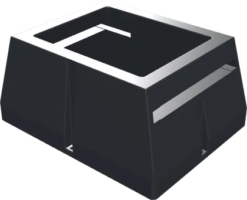
01 · LPA_BoxEnclosed electronicsAn outer frame print houses the LED wiring and the perf board, so no electronics sit loose on the bench.
Intensity in codeLight intensity is varied in code, so a run is defined by a set of values, not by a physical adjustment someone has to remember.
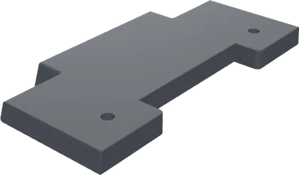
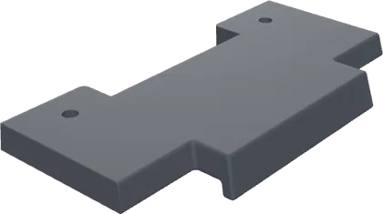
03 · Left_C, Right_CTool‑free assemblySlider prints allow assembly and disassembly without tools.
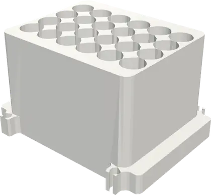
04 · Tube_HolderFixed tube positionA tall print holds the test tubes at a fixed position over the array, so the distance between LED and culture is the same every run.
5.2 Build
Control runs from an Arduino Uno R4 WiFi. PWM signals from the Arduino drive three MOSFETs, one per intensity tier, and software sets the duty cycle for each tier. The selected intensities are held constant for the duration of a test, so each culture receives a fixed, well‑defined dose. Three calibrated tiers across two wavelengths give six defined light conditions per run.
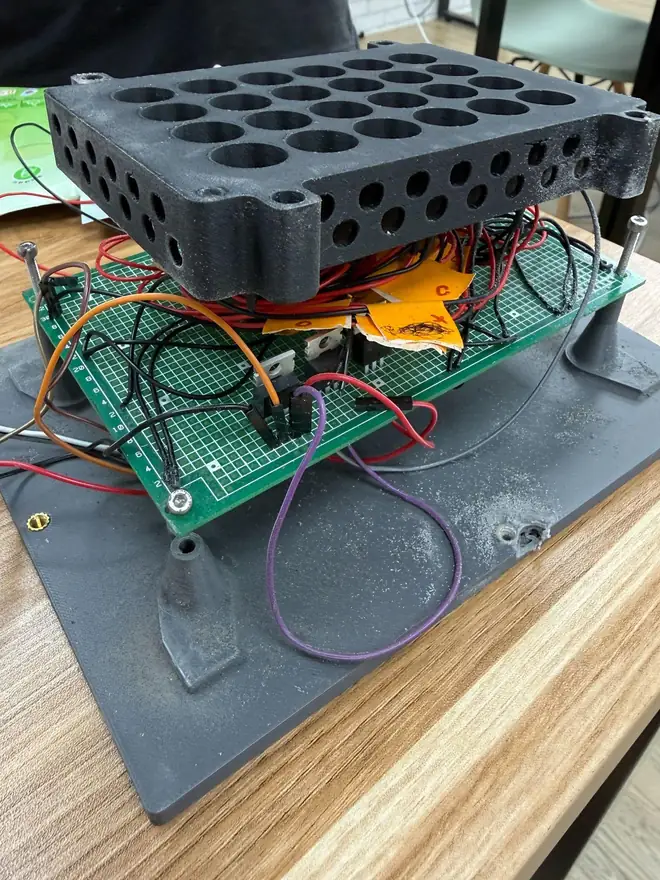

5.3 Test
During our overnight test run, the connection point on the bottom plate broke off. The LPA was on a shaker for the run; the frequency was most likely too high for the printed post. Several wires came undone and had to be resoldered.
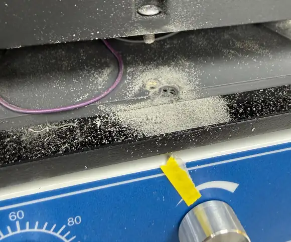

The white tube holder print () allowed light to leak into neighbouring holes. This compromised our data, as the test tubes were receiving light from more than one source.
5.4 Learn
Hold the plate at four points
All four screws on the bottom plate are now used, not two, which spreads the load across four points instead of concentrating it on a pair. Every soldered connection was reinforced. Neither change has been through a second overnight run on the shaker, so the repair is untested.
Final Design
6.1 Final CAD and Prototype Photo
The final CAD is rendered in 3D at the top of this page, with the black tube holder of the final build (5.4). lays out its parts, numbered as in the CAD file list in 9.3, is the final prototype, and in 6.2 cuts through the assembly to show how the parts stack.
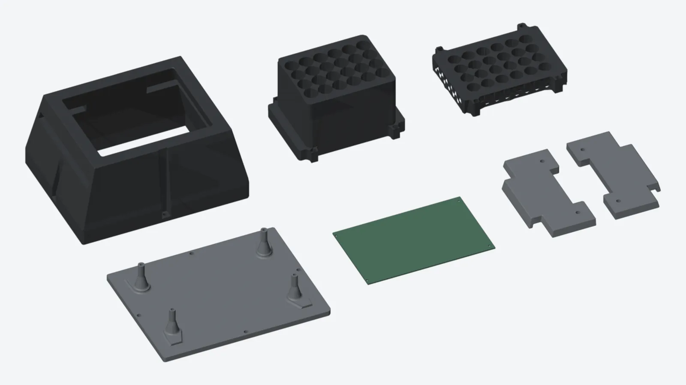
1 2 3 4 5 6 76.2 Key Specifications
- Array
- 4 × 6 (rows × columns), being 2 wavelengths × 3 intensity tiers, with 4 matched LEDs per column
- Green channel
- Around 535 nm, which induces protectant expression
- Red channel
- Around 670 nm, which halts it
- Intensity tiers
- Three, resistance‑matched and mathematically recalibrated to match across columns
- Control
- Arduino PWM through three MOSFETs, one per tier (5.2), held constant for the duration of a test
- Shielding
- External‑light coverage isolating the cultures from ambient light
- Enclosure
- Enclosed frame for the LED wiring, with slider prints for tool‑free assembly
- Tube holder
- Tall print sized to hold test tubes at a fixed distance from the array
Dimensions, measured from the CAD files6 values
- Measured from the CAD files
- Footprint
- 211 × 164 mm (217 mm across the sliders)
- Height
- 108 mm from the bottom plate to the top of the housing; the tube holder adds 80 mm
- LED grid
- 4 × 6 on an 18 mm pitch, shared by the LED holder and the tube holder
- Tube bores
- 24, each 17 mm across, narrowing to 16 mm in a 3 mm lip at the LED end
- Between tubes
- 1 mm of wall between neighbouring bores (2 mm at the lip): the 18 mm pitch less a 17 mm bore
6.3 Limitations
A fixed dose, no feedback
The LPA applies a fixed dose and does not respond to the culture, so it cannot be used to close a control loop. That is deliberate, but it means nothing here transfers directly to the bioreactor without a feedback path being added.
Wavelengths assumed, not measured
The wavelengths are taken from the published CcaS/CcaR values and have not been measured on our own parts, so the stated peaks are assumptions until the LEDs are characterised.
No correction for drift
Matching corrects for spread between LEDs at build time. It does not correct for drift as the LEDs age or warm up during a long run.
Proof of Concept
The purpose of this section is to show a culture run completed end to end under the LPA, without yet claiming any relationship between intensity and production rate. That relationship is the subject of section 8.
Level 2 Test: Intensity Variability
This is the test the LPA was built for. Holding wavelength fixed and varying intensity across the three calibrated tiers, does protectant production change with the intensity applied?
Reproduction
9.1 Materials List
Full costing is kept in the LPA cost sheet, which feeds the cost analysis in the business plan.
Bill of materials11 lines, costing incomplete
Twelve LEDs of each colour go into the array, picked from twenty of each and measured one by one (4.3). The roll of solder is shared with the team’s other instruments. Unit costs and suppliers are not on record yet.
| Component | Part number / spec | Qty | Unit cost (TWD) | Total (TWD) | Supplier |
|---|---|---|---|---|---|
| Green LED | — | 12 | — | — | — |
| Red LED | — | 12 | — | — | — |
| MOSFET | — | 3 | — | — | — |
| Microcontroller | Arduino Uno R4 WiFi | 1 | — | — | — |
| Perf board | 160 × 100 mm in the CAD | 1 | — | — | — |
| Power supply | 5 V | 1 | — | — | — |
| Hook‑up wire | 20 AWG jumpers, 10 cm | 12 | — | — | — |
| Solder | — | 1 roll | — | — | — |
| Heat‑set inserts | — | — | — | — | — |
| Screws | — | — | — | — | — |
| Filament, PLA | Bambu Lab PLA Basic, 1.75 mm, 1 kg spool | 1 | 355.99 | — | — |
| Total | — |
Printed parts6 parts
| Part | Material | Filament (g) | Infill |
|---|---|---|---|
| LPA_Box | Black PLA | — | — |
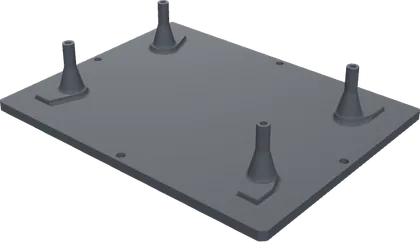 Bottom_Plate | Grey PLA | — | — |
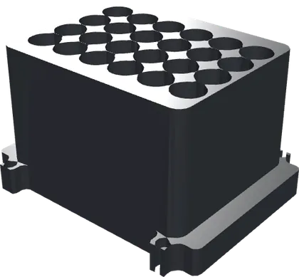 Tube_Holder | Black PLA, 4 wall loops (5.4) | — | — |
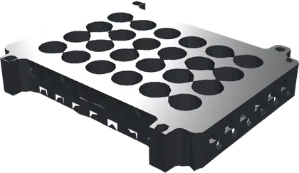 LED_Holder | Black PLA | — | — |
| Left_C | Grey PLA | — | — |
| Right_C | Grey PLA | — | — |
Equipment
Lux meter, 3D printer, soldering iron, calipers, and the printed sensor fixture used for LED matching.
9.2 Assembly Guide
Until it is written, shows how the parts stack in the finished instrument, and lays them out one by one.
9.3 Downloadable Blueprints
The CAD files below are numbered as in . They are STL meshes in millimetres, in the instrument's own coordinates, so they open already assembled.
- 1Base Plate
Part
Bottom_Plate - 2Left
Part
Left_C - 3Right
Part
Right_C - 4Box
Part
LPA_Box - 5LPA Body
Part
LED_Holder - 6Tube Insert
Part
Tube_Holder
References
The LPA is not a new idea. Illuminating a plate of cultures from below with per‑well control is the Light Plate Apparatus pattern from the optogenetics literature; our LPA follows that pattern and is named after it. What we added is the dual‑wavelength column layout and the resistance‑matched LED selection, in an enclosure sized for our own tubes.
The biology is the CcaS/CcaR green/red switch, also from the literature, not designed here. Our dose target comes from the Castillo‑Hair characterisation of that system, whose half‑maximal point is 4.66 µmol m−2 s−1.